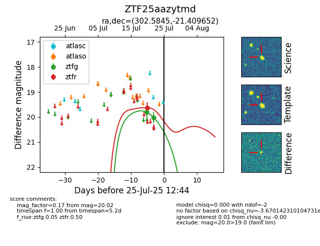

Target ZTF25aazytmd at 2025-07-25 12:44, see:
FINK: fink-portal.org/ZTF25aazytmd
Lasair: lasair-ztf.lsst.ac.uk/objects/ZTF25aazytmd
ALeRCE: alerce.online/object/ZTF25aazytmd
alt names
ZTF25aazytmd (ztf,fink)
coordinates:
equatorial (ra, dec) = (302.5845,-21.40965)
galactic (l, b) = (21.2250,-26.49363)
photometry
last ztfg=20.02, ztfr=19.62
2 ztfg, 1 ztfr detections
